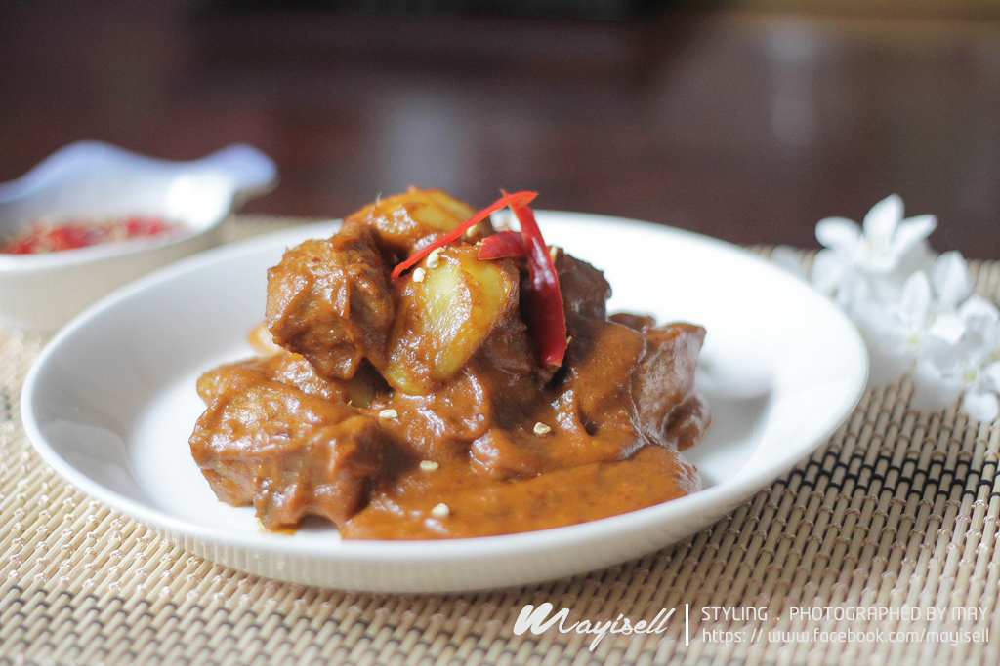

เรนดังเนื้อ
กำเนิดจากชนเผ่ามีนังกาเบา (Minangkabau) ในสุมาตราตะวันตก เดิมเป็นภูมิปัญญาถนอมอาหาร สำหรับการเดินทางรอนแรมไกล โดยนำเนื้อวัวมาเคี่ยวกับกะทิและเครื่องเทศสมุนไพรนานหลายชั่วโมงจนน้ำระเหยหมด เหลือน้ำมันมะพร้าวเคลือบเนื้อจนเป็นสีน้ำตาลเข้ม สามารถเก็บไว้ได้นานนับเดือนโดยไม่บูดเสีย และเคยได้รับเลือกจาก CNN ให้เป็นอาหารที่อร่อยที่สุดในโลก
เนื้อวัวเปื่อยนุ่มชุ่มฉ่ำ รสชาติเข้มข้นลึกซึ้ง หอมมันกะทิคั่ว เผ็ดร้อนกลมกล่อมจากตะไคร้ ข่า และใบขมิ้น รสเค็มหวานพอดี ซึมลึกเข้าสู่ทุกอณูของเนื้อ
เนื้อวัวส่วนสะโพกหรือสันคอ, หัวกะทิคั้นสดเข้มข้น, ตะไคร้ทุบ, ข่า, ใบมะกรูด, ใบขมิ้น, ส้มแขก (Asam gelugur), พริกชี้ฟ้าแดง, หอมแดง, กระเทียม